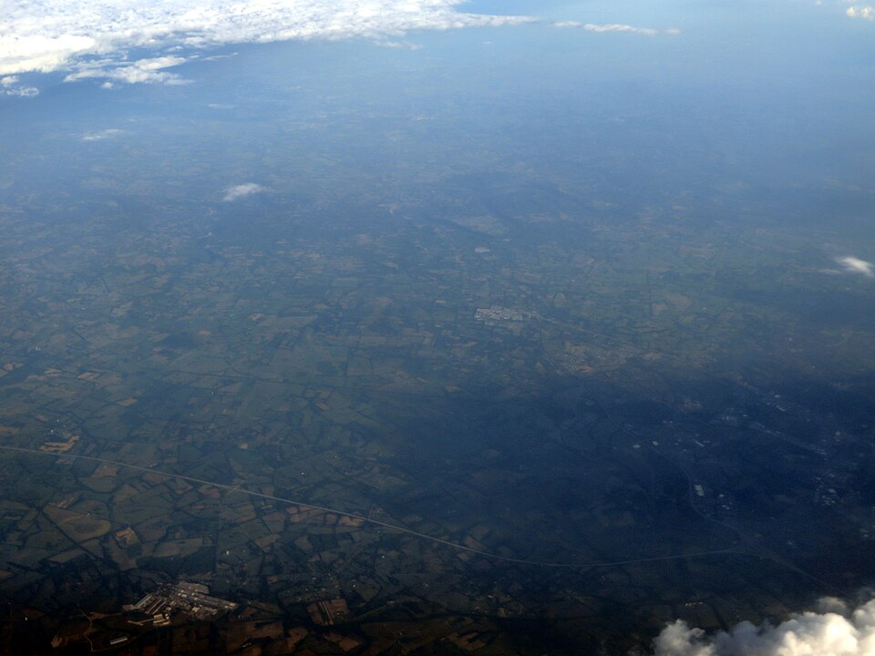
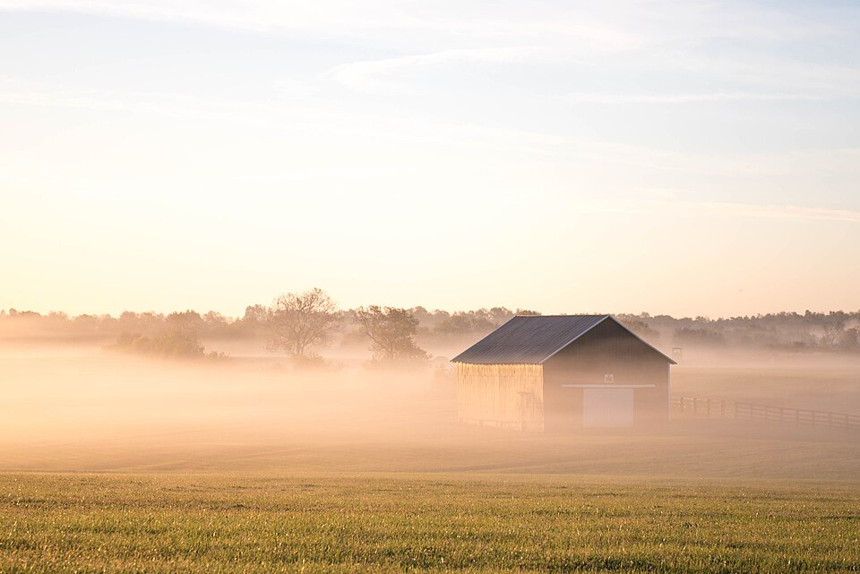

An Old Fashioned, made correctly, needs no improvement — and neither does a great bourbon neat.
You cannot fully separate bourbon from Kentucky. The state's unique geography — its water, climate, and culture — produced conditions so ideal for whiskey aging that they became legally inseparable from the spirit's identity.


Kentucky sits on a vast limestone shelf that filters groundwater, removing iron (which turns whiskey black and bitter) while adding calcium and magnesium that benefit yeast health and fermentation. This water — uniquely low in iron, uniquely mineral — is considered impossible to fully replicate elsewhere.
Kentucky summers reach 100°F; winters drop below 0°F. This extreme cycling causes barrels to expand in summer heat, pushing spirit deep into the wood grain, and contract in winter cold, pulling the spirit back out enriched with oak extracts, vanillin, and tannins. No climate on earth produces this same effect.
Kentucky's rich soil produced surplus corn from the earliest settlement era. Corn-based spirits were a practical way to preserve and transport grain value over long distances. The Ohio and Mississippi Rivers gave early distillers access to New Orleans markets — the barrels aged on the journey south.
Nelson County's Bardstown has been named the "Bourbon Capital of the World." Heaven Hill, Maker's Mark, and Jim Beam are all within 30 miles. The Kentucky Bourbon Trail officially launched in 1999 and now draws millions of visitors annually to 37+ distilleries across eight historic counties.
37+ distilleries across 8 counties. Over 2 million visitors annually. The trail launched in 1999 and transformed Kentucky tourism.